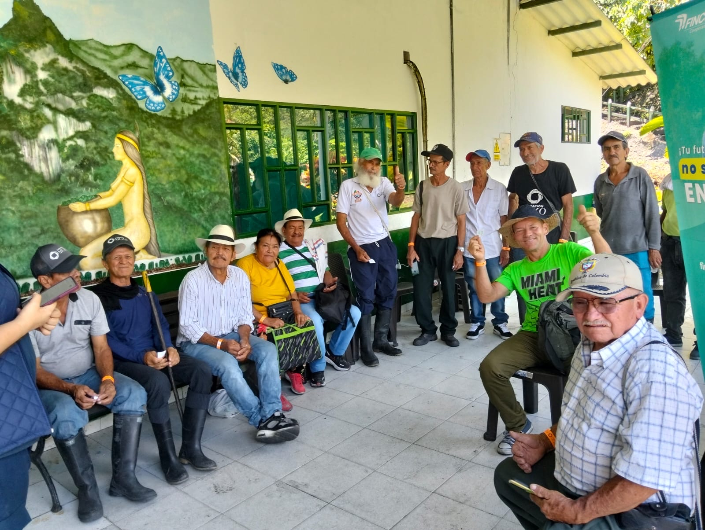
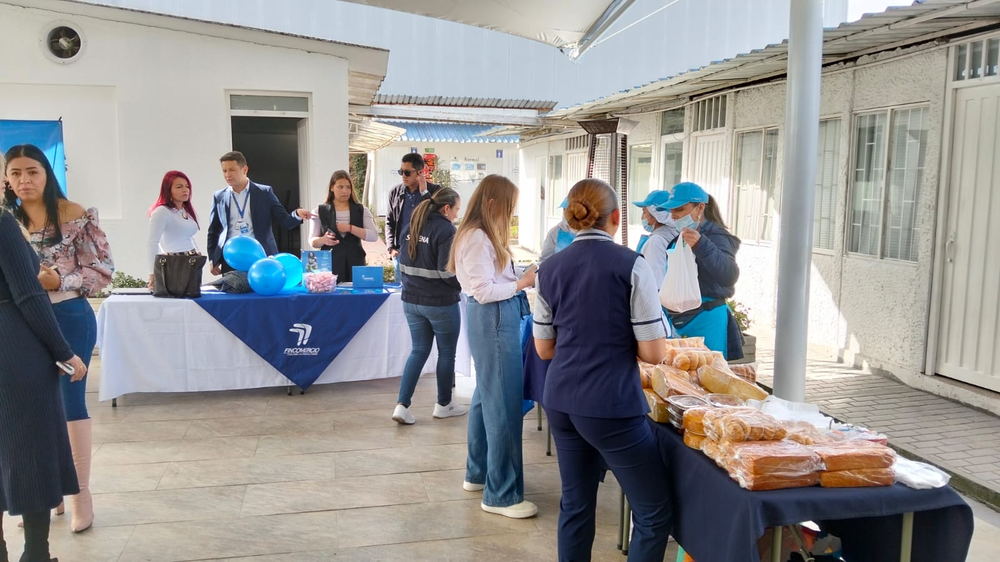
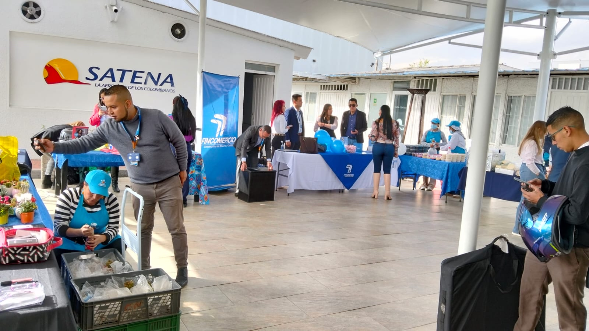
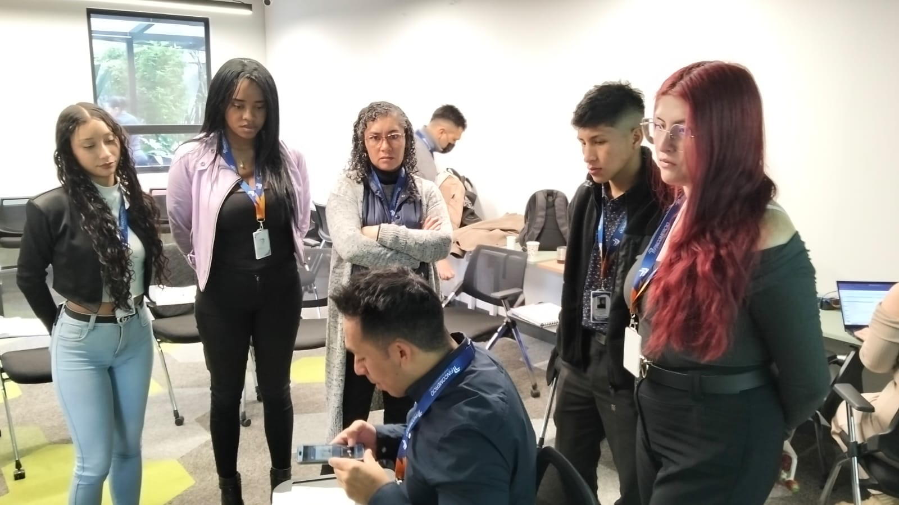
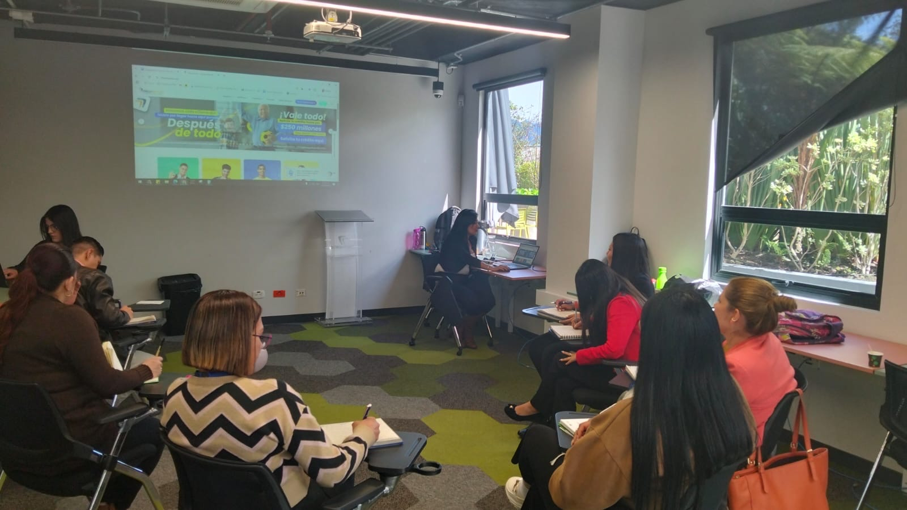
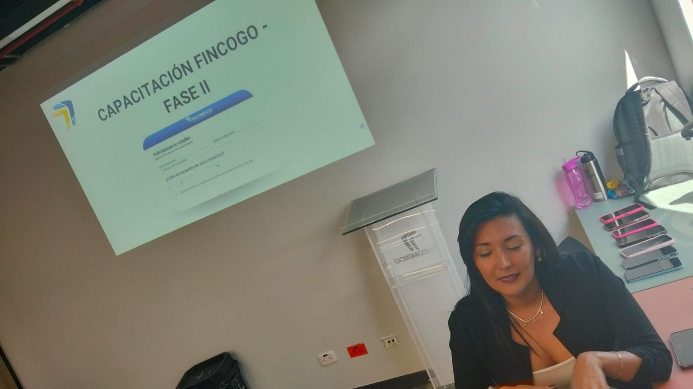
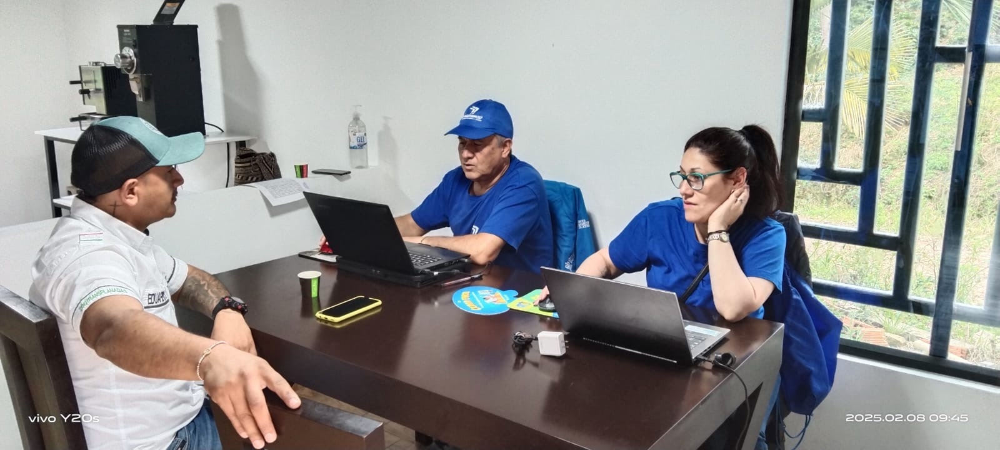
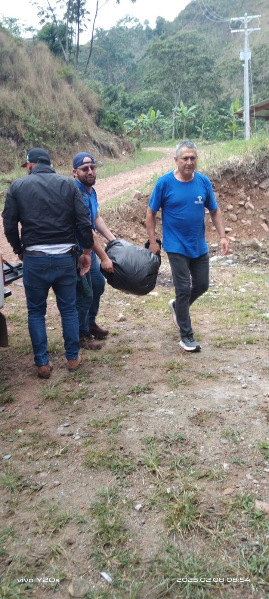
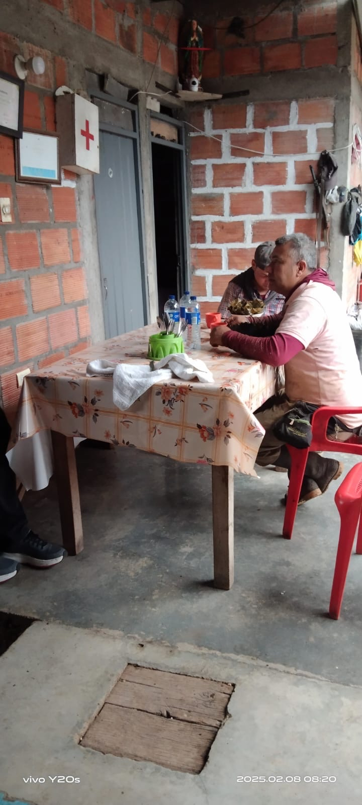

Canal Virtual
Donde la estrategia y la innovación se conectan para impulsar resultados


Donde la estrategia y la innovación se conectan para impulsar resultados
Línea de tiempo evolutiva de mejoras, hitos y observaciones por producto

Hector Henao
Director Canales no Presenciales

Maria Claudia Zubieta
Jefe Canal Virtual

Juan Pablo Peñaranda Rivera
Coordinador Datamarshall

Luis Hernan Segura
Lider de Convenios

Tatiana Villareal
Analista III

Jennifer Vanegas
Analista II

Valentina Portilla
Analista I

Diana del Pilar Osorio
Auxiliar Canal Virtual

David Alejandro Mantilla
Auxiliar Canal Virtual
Líder de Convenios


Análisis de gestión – Tatiana Villareal
Gestión – Valentina Portilla
| Canal | Cantidad Brigadas | Costo | Total Créditos | Total PAPS | Total Vinculaciones |
|---|
| Año | Mes | Brigadas | Costo | Créditos | PAPS | Vinculaciones |
|---|
Gestión – Diana del Pilar Osorio
Registro visual de acompañamiento en brigadas










Gestión – David Alejandro Mantilla
| Canal Atención | Claridad | Conocimiento | Disponibilidad | Tiempo Respuesta | Recomendación Servicio | Recomendación Canales |
|---|
Distribución general y por canal
| Percepción | Total Comentarios | % Por Percepción |
|---|
| Canal Atención | Buena | Mala | Neutra | Total |
|---|
Desempeño y adopción del canal virtual
Iniciativas estratégicas del canal virtual
Iniciativas estratégicas del canal virtual